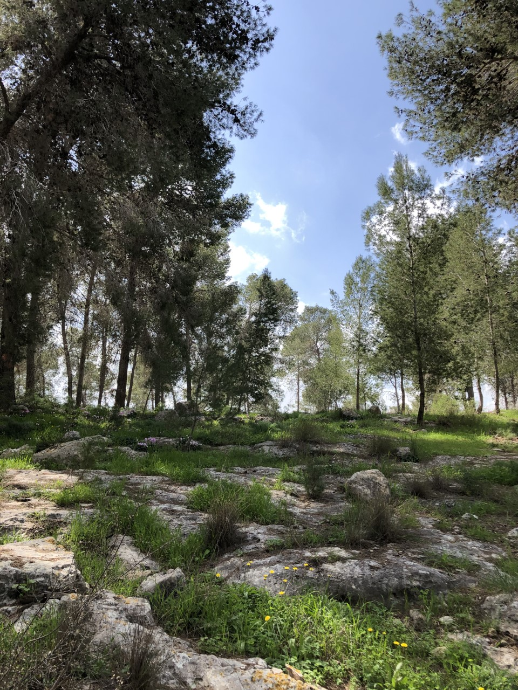
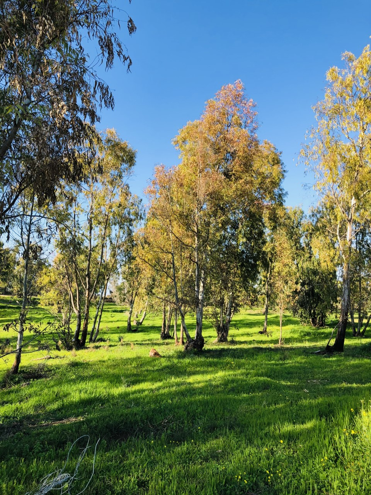
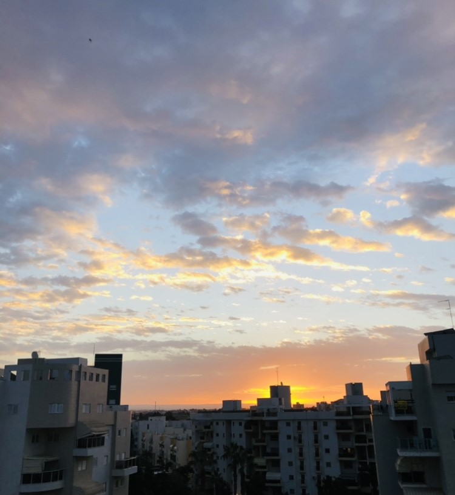
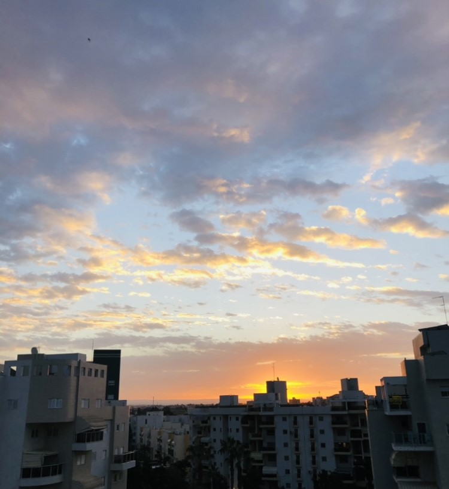
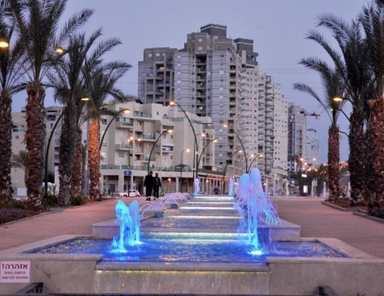
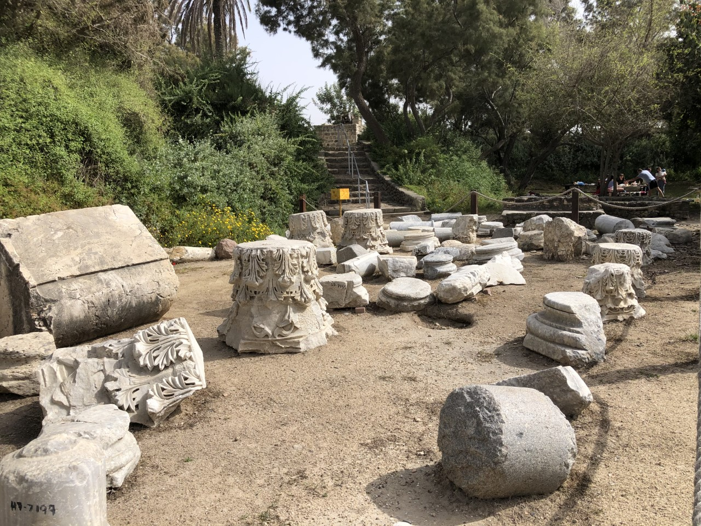
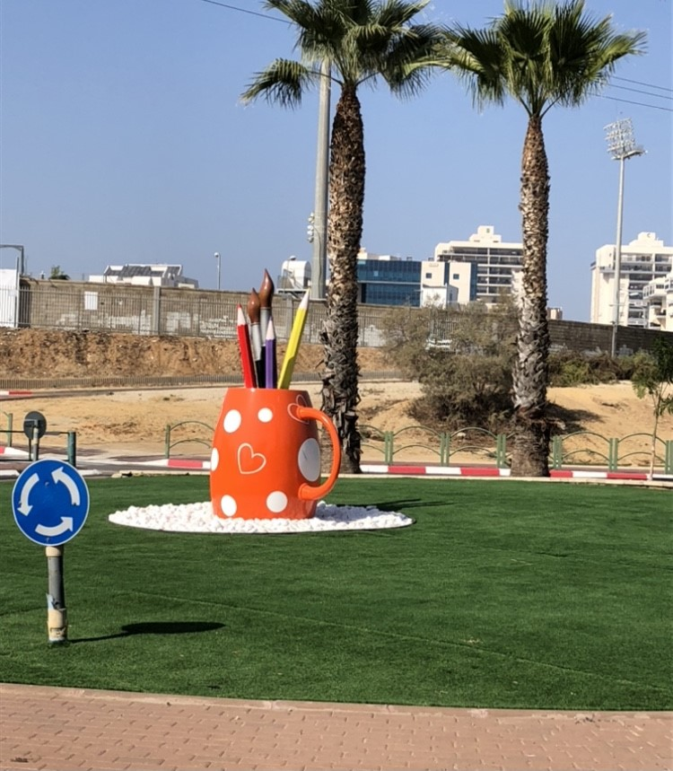
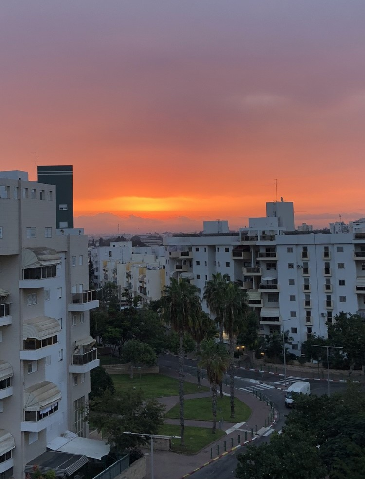

I Live Here! Ashkelon is an ancient coastal city in the south district of Israel on the Mediterranean coast.
אשקלון איה הבית שלי
אני גרה בעיר היפה והפורחת אשר ממוקמת על חוף הים התיכון, השלישי בגודלה במחוז הדרום ,אחת הערים העתיקות ביותר בארץ. מקור שמה של אשקלון הוא שקל, שהיה פעם שמה של העיר,אדמות העיר ספוגות בהיסטוריה עתיקה.אשקלון התגלתה ארכיאולוגיה מלפני 5000 שנה.אשקלון המודרנית מקיימת את קיומה מאז 1951. העיר מונה כ-162000 תושבים.
למה אני אוהבת את העיר שלי, אולי בגלל שהחלומות שלי והתקוות שלי נמצאים כאן, אולי בגלל שהילדים שלי גדלו כאן או בגלל שזה הבית שלי ואין בית אחר…לא, לא רק מסיבות אלה אני אוהבת את העיר שלי.קודם כל באשקלון גרים אנשים חמים, נפשיים ומדהימים .הרופאים והמורים שלנו הם הגאווה שלנו, אנשים עם לב ענק רמה גבוהה של מקצועיות.אשקלון היא עיר תיירות :יש לנו חוף הים אורך 12 ק"מ , המרינה והגן לאומי. פארק לאומי מקום מאוד יפה עם נוף של הים, מעניין להסתובב בין העתיקות, הרבה עצים ,יש גן שעשועים,


 




